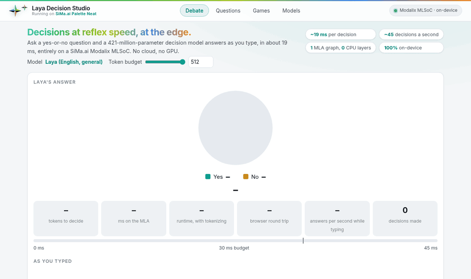
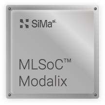

Decisions at Reflex Speed.
At the Edge.
Neat Decision Studio runs System-1 decision models on the SiMa.ai Modalix MLSoC. A model reads a piece of text and a typed question and returns a probability for every option in a single forward pass, entirely on the Modalix MLA. No cloud, no GPU.

Recorded on a Modalix DevKit in real time: the model answers again at every keystroke, 19 ms on the MLA each time.
From a Fresh DevKit to a Decision in Minutes.
No compiler and no host: the runtime is built on the board, and the app downloads the compiled models from Hugging Face. You need a Modalix DevKit on the SDK's eLxr image with internet access, and room on its NVMe.
The LLiMa Runtime
The runtime links against LLiMa's development package; the web app needs only Python's standard library.
sima-cli neat install llima sudo apt install cmake g++ python3 \ nlohmann-json3-dev
Clone, Set Up, Run
setup.sh checks the prerequisites, builds the runtime and adds a neat-decision shortcut.
cd /media/nvme git clone https://github.com/dotimothy/neat-decision-studio.git cd neat-decision-studio ./setup.sh ./run.sh
Download, Load, Ask
Open Settings, press Download on a model and Load once it has arrived. It is on the MLA a few seconds later.
http://<board-ip>:8095/models
Laya (about 3 GB) is the general model the pages are written for; Laya INT8 (0.7 GB) is the quickest to fetch.
The README covers the rest: keeping the models
elsewhere, the terminal version (neat-decision --cli), compiling the models yourself, and how each game is asked.
A Language Model Writes an Answer. A Decision Model Picks One.
A language model produces its answer token by token. A decision model scores the options it is given, all at once, which is why it fits a reflex: routing, triage, gating an action, or every move of a game.
No Text Generation
The answer is a probability per option, read off a single forward pass of the encoder and its decision head.
Choose, Score, Yes or No
Three kinds of question, with your own options. The answer space is built for every request.
About 50 a Second
At 19 ms a decision, one board answers a stream of questions, or plays a game in real time.
Say What to Decide
Any text or JSON, and a question with its options.
"We were billed twice for March." Which department? billing / technical / other
One Pass, on the Chip
The whole encoder and decision head run as a single graph on the Modalix MLA. Only the tokenizer and a table lookup stay on the CPU.

Read the Answer
A probability for each option, and how sure the model is that it should act.
A Web App on the Board, Open in Any Browser.
Every page shows the time the MLA took for the decisions on screen. Several models can be on the MLA at once, and each page can ask any of them.
Every Move Is a Decision on the Chip.
In each game a model makes every decision, and the page shows what it was told and how it chose. Any loaded model can take a seat, so two models play each other; a person can take one too, and in three of them the other side can be a language model served by NEAT GenAI Studio on the same board.
Compiled for the MLA, Measured on Real Silicon.
Each model is compiled with the LLiMa compiler framework and published on Hugging Face. The app's Settings downloads one to the board, checks every file against its sum and loads it on the MLA, beside the ones already there.
| Model | Encoder | Shortest Graph | Download | Repository | Licence |
|---|
The list as published.
Latency is one pass on the MLA, measured on a Modalix DevKit, on the model's shortest graph. The Laya graphs are a
single MLA stage each (the compiler reports MLA: 1, A65: 0); CLM and d1 3B are chains of graphs. Against the
PyTorch originals, the general model gives the same decision in 100 of 100 cases.
Built with SiMa.ai Palette Neat.
One Graph per Length
The checkpoints are built on the LLiMa compiler framework into MLA graphs, one for each sequence length.
A Small C++ Runtime
Tokenizing and a table lookup on the CPU, everything else on the MLA, behind one JSON line per request.
This Studio
A web app in the Python standard library, a terminal prompt, and compiled models on Hugging Face.
The code is Apache-2.0. The models are upstream's: Convai Innovations' Laya (Apache-2.0), Contrastive-LM's CLM on Qwen3-8B (Apache-2.0), and LiquidAI's d1, under the LFM Open License v1.0, which limits commercial use to organisations under 10 million dollars of annual revenue. The chess model is datafreak's LayaChess.